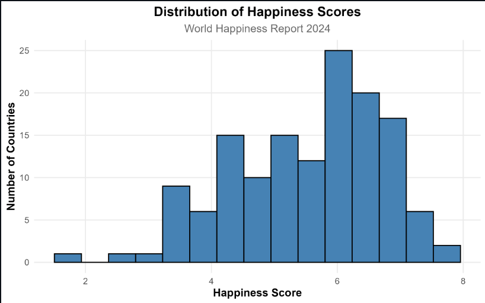
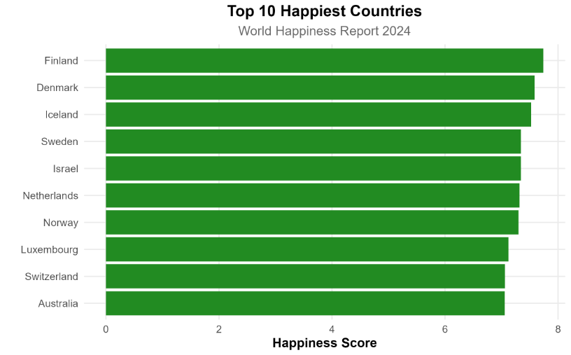
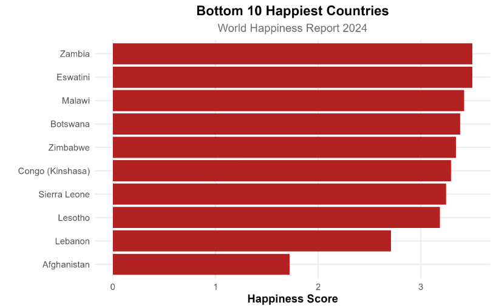
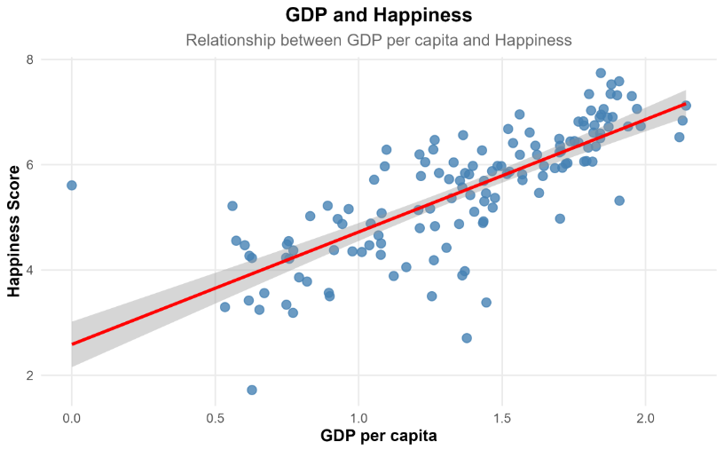
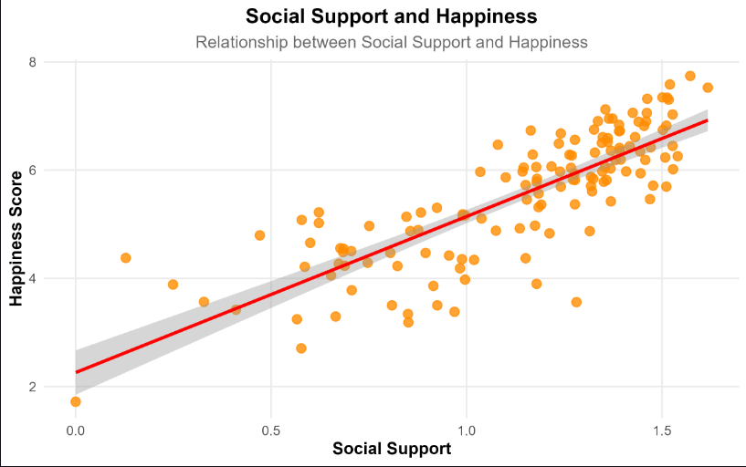
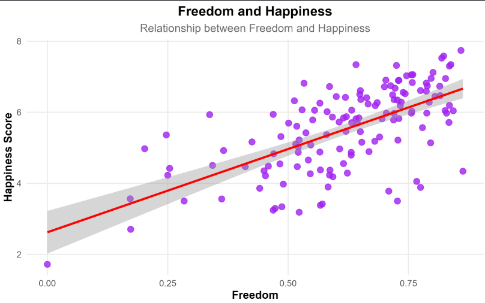
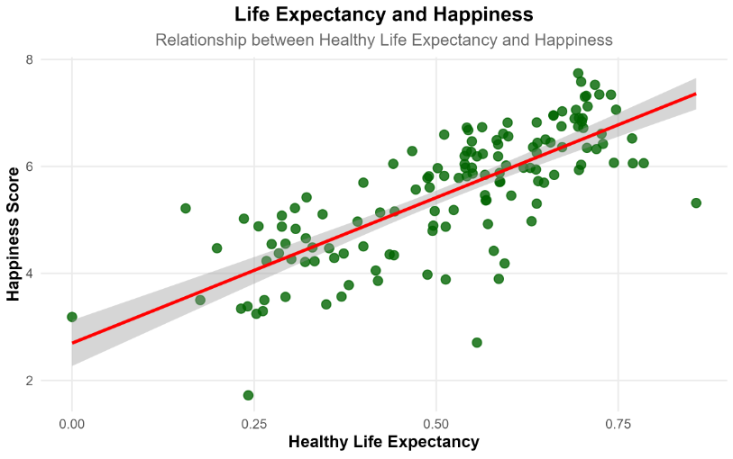
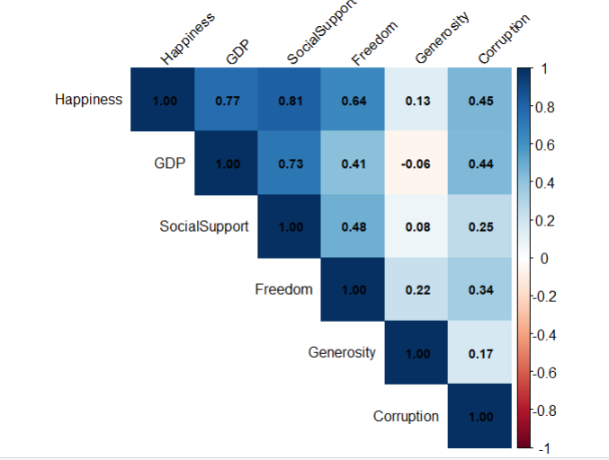

World Happiness Analysis using R
R · ECONOMICS · REGRESSION ANALYSIS
An economics research project that explores the socioeconomic determinants of happiness across countries using the World Happiness Report 2024 dataset. The analysis applies data cleaning, exploratory data analysis, visualization, correlation analysis, and multiple linear regression to examine how economic and social indicators influence happiness levels.
Project Overview
The World Happiness Report ranks countries based on people's self-reported life evaluations while considering several socioeconomic factors.
This project investigates how variables such as GDP, social support, healthy life expectancy, freedom, generosity, and perceptions of corruption contribute to happiness across countries.
The analysis was conducted entirely in R using modern data analysis packages from the tidyverse ecosystem.
Research Objective
The primary objective of this project is to examine the relationship between happiness and key socioeconomic indicators across countries.
- Clean and prepare the World Happiness Report dataset.
- Explore the distribution of happiness scores.
- Identify the happiest and least happy countries.
- Study relationships between happiness and socioeconomic variables.
- Perform correlation analysis.
- Build a multiple linear regression model.
- Interpret the statistical significance of each determinant.
Dataset
Source: World Happiness Report 2024
The dataset contains country-level information on:
After data cleaning, the final dataset consisted of 140 countries.
Methodology
Multiple Linear Regression
A multiple linear regression model was estimated using the following specification:
Model Diagnostics
Regression assumptions were evaluated using:
- Residual vs Fitted plot
- Histogram of Residuals
- Normal Q-Q plot
Key Findings
The regression model explained approximately 82% of the variation in happiness scores (R² ≈ 0.82).
- Social Support is one of the strongest predictors of happiness.
- Freedom to Make Life Choices has a substantial positive relationship with happiness.
- GDP per Capita remains statistically significant after controlling for other variables.
- Healthy Life Expectancy contributes positively to national happiness.
- Generosity was not statistically significant in the final model.
- Overall, the regression model provides a strong fit for explaining cross-country differences in happiness.
Visualizations

Distribution of Happiness Scores

Top 10 Happiest Countries

Bottom 10 Happiest Countries

GDP vs Happiness

Social Support vs Happiness

Freedom vs Happiness

Life Expectancy vs Happiness

Correlation Heatmap
Technologies Used
Future Improvements
- Building panel data models using multiple years of the World Happiness Report.
- Applying machine learning algorithms to predict happiness scores.
- Comparing results across regions and income groups.
- Investigating causal relationships using econometric techniques.
Project Repository
The complete R analysis and project files are available in the GitHub repository.
View Project on GitHub